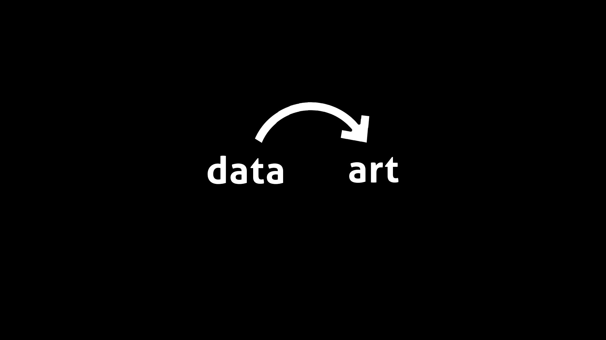
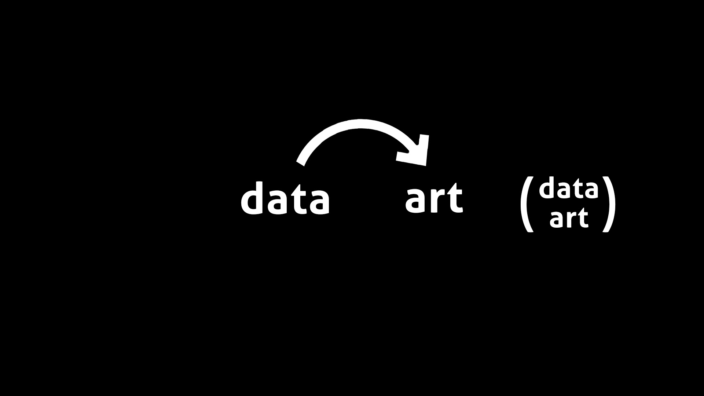
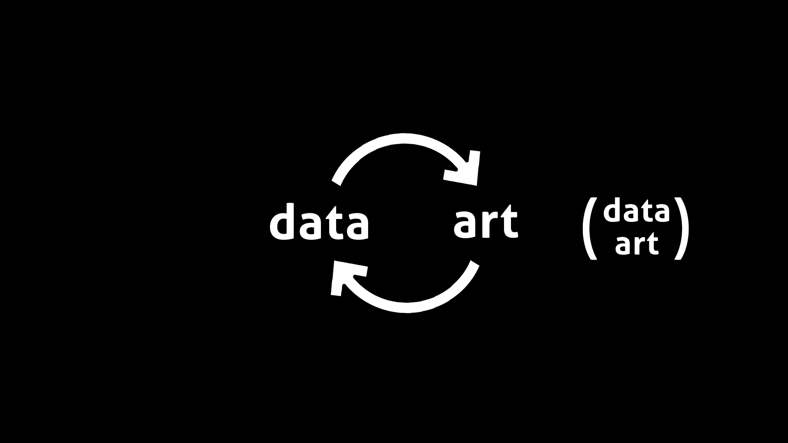
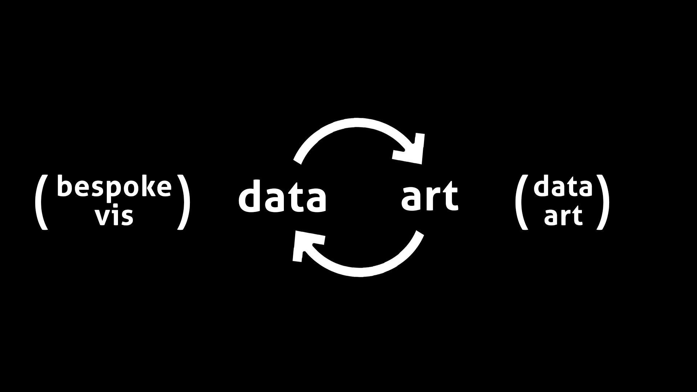
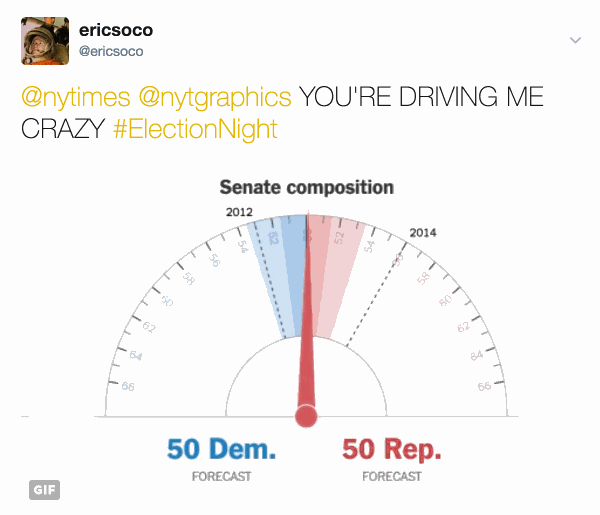
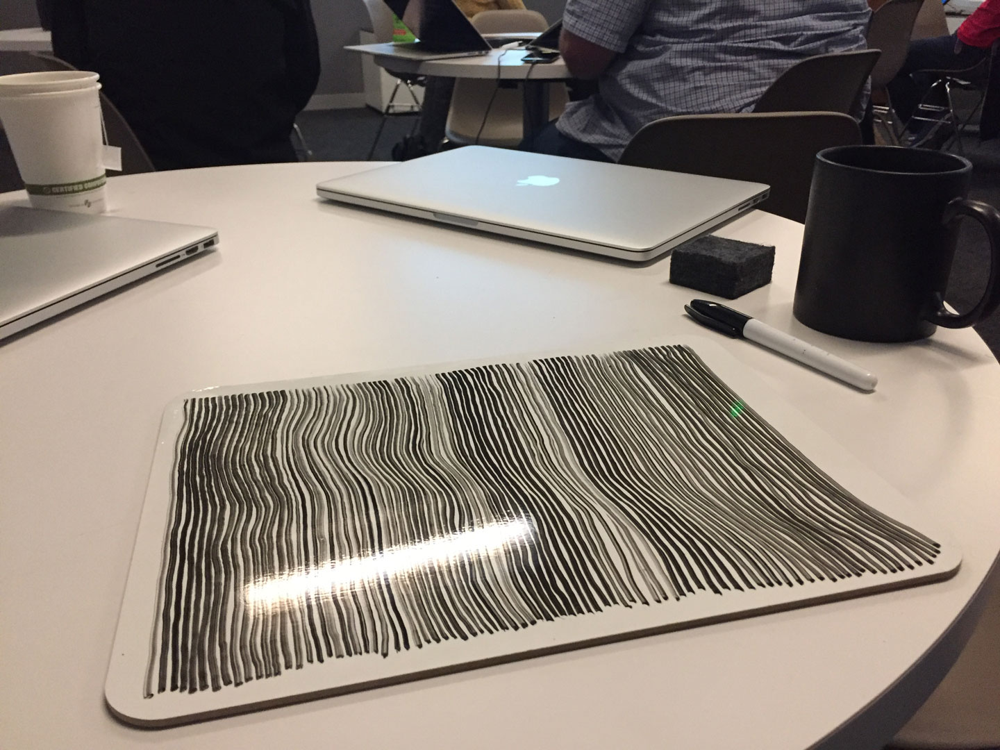
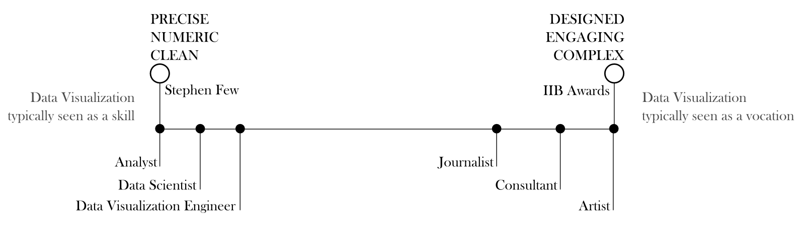
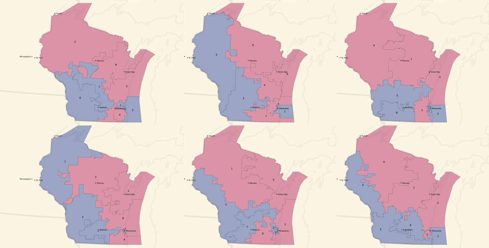
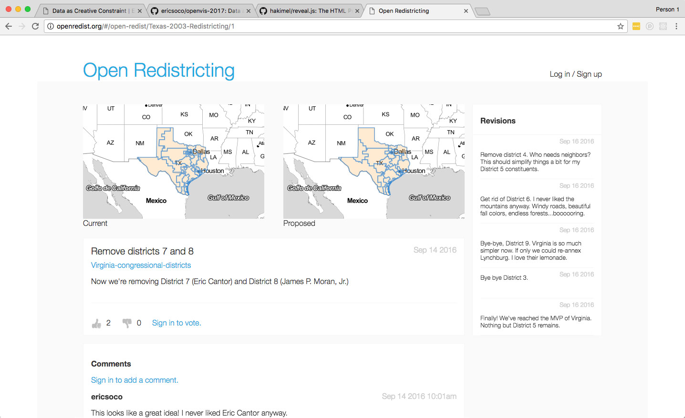

Data as Creative Constraint
Eric Socolofsky
@ericsoco




Generative Art
algorithmic art
creative coding
procedural art
"computer art"
Generative Art
generation (obv!)
set of rules / system
emergent behavior
Techniques
algorithms
randomness & probability
particle systems
recursion & repetition
motion
color
algorithms
illustration
texture
empathy
randomness & probability
variation
fuzziness/uncertainty
probability
Musikalisches Würfelspiel

particle systems
components of system
relationships between elements
data elements
recursion & repetition
this is where things get weird.
???
machine learning, genetics/evolution
I Am Sitting In A Video Room

Visual Introduction to Machine Learning
motion
bestow personality
represent interrelationships
illustrate change
draw attention
200 Countries, 200 Years, 4 Minutes
color
encoding
highlighting
legibility
visual appeal
The Starry Night
Pie Packed
Yeah, but...

happy trails!
@ericsoco
medium.com/visualizing-the-field
Gerrymandering Valentines


join us!
@ericsoco